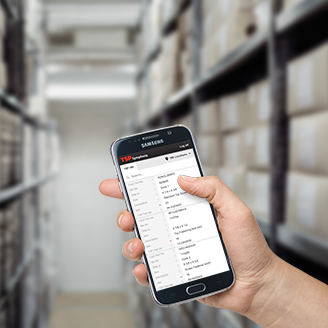
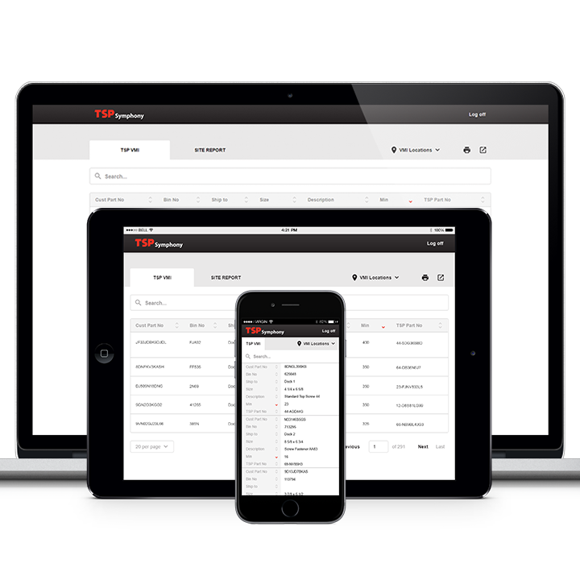
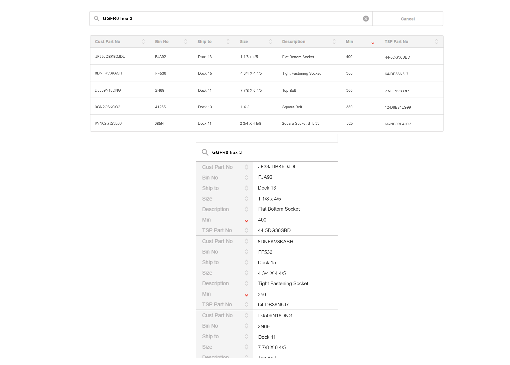

TSP VMI
UI Design
Overview
Texas Screw Products, officially known as TSP, is a supply chain partner that sells industrial fasteners to oil&gas, manufacturing, and construction businesses. One of the more important services they provide their customers is VMI (vendor-managed inventory). We helped TSP deliver a web application specifically designed for TSP's customers. The final capstone to this web app was a responsive web application that allowed those customers to access on-site TSP part information whenever, whereever, and with whatever device they had on hand.
Problem
The biggest obstacle to all of this was designing a way in which warehouse employees could quickly find exact parts within thousands of attributes and records.
In our initial research, we talked with discussed with our stakeholder team to find out what happens today during the part-finding process. We found numerous ways we could make the employee's lives and jobs easier. We found out that 80% of our end-users spent a majority of their day in the warehouse, and 20% worked in an office. Mobility was a very important priority. Currently, warehouse workers were stuck in close proximity to their "kiosks" to find part info on computers from the early. Then, they would scramble around the warehouse collecting and assemblying parts. What happened if you forgot a bin number? Back to the kiosk you go.
Naturally, an application that could be reached by any mobile device became the best solution. So, we had to build an app experience that retained most of its functionality across all device sizes. Users needed the functionality they were accustomed to on their kiosks. Users needed to be able to search by product name, sort data, switch between various VMI locations, and they needed ways to quickly identify which parts are at low-inventory or which ones are being bought the most. And, all of this needed to be done while picking parts inside a warehouse.
At this stage of the project, we had already designed an entire pattern library. Our real focus was about creating a design pattern for table data that not only showcased many attributes, but did so in a highly-legible, highly-usable way.
Conclusion
We delivered high-fidelity designs of the VMI functionality, and the entire web application was delivered mid-2015. It serves thousands of part records to some of the largest oil&gas companies in the United States.
Previous Project: Hue Pro Next Project: ExpensAble